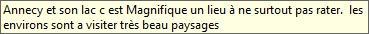

GÉNÉRER DES VARIABLES LEXICALES
Sphinx iQ3 permet de créer des variables lexicales à partir du texte de l’analyse. Réutilisables dans l’environnement Quanti, les variables lexicales permettent d’effectuer d’autres traitements statistiques grâce au recodage des verbatim.
Pour générer des variables lexicales, procédez comme suit :
-
Depuis le menu Données, volet Indicateurs, cliquez sur le bouton Variables lexicales.
-
Sélectionnez les variables lexicales à créer.

Variable fermée construite sur les principaux mots du lexique
-
Une modalité par élément
Cette option permet de créer une variable fermée avec comme modalité le nombre de mots dans la limite de 256. Transposée dans l’environnement Quanti, cette variable permet de faire un tri à plat pour afficher le nombre d’observations où chaque mot est cité.

EXEMPLE :
Le tableau à plat ci-dessous affiche, pour chaque mot, le nombre de fois qu’il est cité dans l’ensemble des observations. On peut ainsi dire par exemple que 50 observations sur 131 contiennent le mot « manger ».
REMARQUE : Le mot « manger » peut apparaître plusieurs fois dans une observation.
À noter aussi que si aucun mot n’est marqué, la codification est faite sur l’ensemble des 256 premiers mots du lexique.

-
Présence ou absence du mot
Avec cette option, les observations sont recodées selon la présence ou l’absence du mot choisi dans l’observation. Il est possible de marquer au préalable un ou plusieurs mots sur lesquels on veut travailler.
EXEMPLE :
Marquage du mot « manger » et création d’une variable fermée sur sa présence ou son absence dans chaque observation.

-
Sur le tableur, l’observation 1 contient le mot « manger » alors que l’observation 6 par exemple ne le contient pas,
-
Le tableau à plat montre que le mot « manger » est utilisé dans 50 observations sur 131.
Variables fermées construites sur la liste des principaux concepts
Grâce à cette option, la variable lexicale est créée à partir des concepts intégrés dans le logiciel Sphinx iQ3 et accessible via les simplifications.

Après extraction des concepts, chaque observation est recodée avec les principaux concepts selon les mots qu’elle contient.
Variable texte réduite aux mots affichés du lexique
Construire une variable lexicale texte permet d’aller au-delà des 256 premiers mots auxquels sont limitées les variables fermées. Cette option offre la possibilité de traiter tous les mots du lexique.

Indicateurs lexicaux
Les indicateurs lexicaux mesurent la longueur ou la richesse d’une observation. La longueur désigne le nombre de mots avec ou sans répétition d’un même mot et la richesse, le nombre de mots différents ; sans répétition d’un même mot. Les mots outils considérés comme du bruit sont ignorés. Les indicateurs lexicaux génèrent une variable numérique.


Si on prend l’exemple de l’observation 3, elle compte 9 mots en longueur (tous les mots sauf le bruit) et 8 en richesse (le mot "manger" compté une seule fois). La mesure de la richesse présente donc l’intérêt d’ignorer les répétitions dans l’analyse.
Dans notre exemple (voir capture ci-dessous), la longueur moyenne des avis est de 4,6 % et chaque client cite en moyenne 4 mots différents par avis.

Intensité lexicale des mots marqués dans le lexique
Avec cette option, on peut mesurer le poids d’un mot (ou de plusieurs mots) dans une observation ou celui d’un thème (ou de plusieurs thèmes) dans une étude si des regroupements thématiques ont été effectués. Le poids est calculé par rapport à l’ensemble des verbatim.
REMARQUE : Pour que cette fonction soit active, il faut au préalable marquer les mots ou thèmes dont on veut mesurer le poids dans l’étude. La mesure peut se faire pour chaque mot ou pour l’ensemble des mots du lexique.
« Intensité lexicale pour chacun des mots »


EXEMPLE : En lisant entièrement l’observation 16 (voir encadré ci-dessous), on voit que le mot « Lac », présent une fois pèse 11,11 % sur l’ensemble des mots de l’observation et le thème « Beauté » 22.22 %. Ceci s’explique par le fait que le thème « Beauté » regroupe : « Beau » et « magnifique ».

Si l’ensemble des mots qui composent le thème « Beauté » représente 94 % du corpus, l’intensité lexicale du thème « Beauté » est de 94 % pour cette observation.
L’intensité lexicale du mot « Lac » sur l’ensemble du lexique est de 3,5 % en moyenne et celle du thème « Beauté » est de 3,2 % en moyenne.

« Intensité lexicale pour l’ensemble des mots »
L’intensité lexicale du mot marqué est calculée par rapport à l’ensemble des mots de l’observation dans lequel il est cité.

EXEMPLE : Dans l’observation 30813, le mot « Lac » représente 1 mot sur 2, d’où 50 % du poids de cette observation.
Intensité de l’orientation
Sphinx iQ3 permet d’analyser les opinions de chaque observation et de mesurer ainsi le degré de satisfaction.

L’orientation des sentiments s’apprécie en 3 types : positif, négatif et neutre. Ces sentiments sont mesurés sur une échelle de 1 à 3 précisant le degré de satisfaction. Négatif 3 signifie un sentiment très négatif et positif 3, un sentiment très positif, de l’ordre de la satisfaction totale. Négatif 1 correspond à un mécontentement plutôt mitigé.
EXEMPLE :
- Je suis relativement content de ma commande sur votre site =====> Positif 1
- Je suis super content de ma de commande sur votre site ========> Positif 3
- Je suis déçu de ma commande sur votre site ===============> Négatif 1
- Je suis extrêmement déçu de ma commande sur votre site ======> Négatif 3

L’analyse quantitative visualisée sur le tableau à plat ci-dessus monte que dans notre cas , près de 58 % (l’ensemble des positifs) des répondants ont laissé des commentaires positifs.
Rendez-vous dans la section traitant de la création des variables lexicales à partir des dictionnaires.
Avec cette dernière option, des variables textes sont construites à partir de chaque verbatim, variables où chaque mot est ramené à sa forme canonique (option Texte miroir) où classé selon sa nature grammaticale (option Catégorie grammaticale).

Texte miroir
Tous les verbes sont ramenés à l’infinitif et les substantifs au masculin singulier.

Catégories grammaticales
Les mots de chaque observation sont classés selon leur nature avec ignorance des mots outils (articles, prépositions, conjonctions, adverbes, etc.).

Ces catégories grammaticales sont ensuite quantifiables par tri à plat pour identifier les verbes, noms, et adjectifs les plus cités.
EXEMPLE :
Dans le cas ci-dessous, « manger », « ami » et « bon » sont respectivement le verbe, le substantif et l’adjectif les plus cités dans les verbatim des répondants comme le montrent les tableaux ci-dessous.